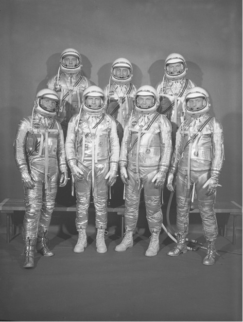
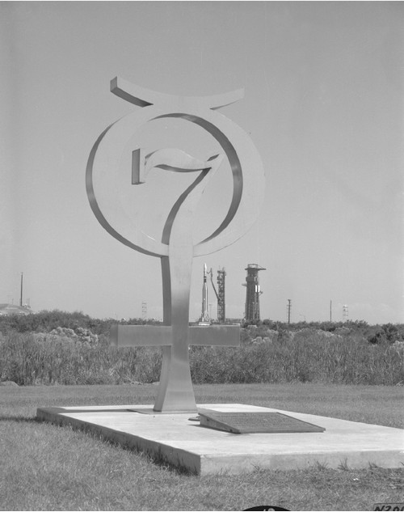
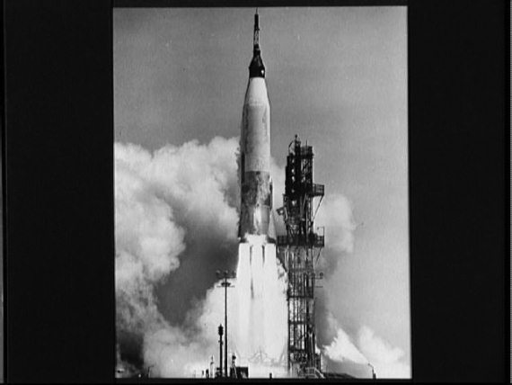
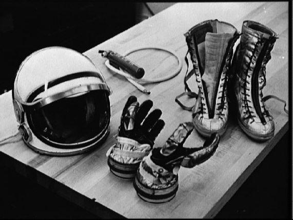

Первые американцы в космосе
В этой главе я хочу рассказать не только о полетах кораблей «Меркурий», которые состоялись в 1961–1963 годах, но и о тех, кто эти корабли пилотировал.
Будет логичнее, если начну с рассказа о пилотах.
Первая группа астронавтов была сформирована в США в 1959 году. Случилось это раньше, чем в Советском Союзе. Требования к кандидатам были жесткими: отличное здоровье, возраст до 40 лет, рост до 180 сантиметров, высшее образование, квалификация пилота реактивных самолетов и налет не менее 1500 часов. Претенденты также должны были иметь диплом выпускника школы летчиков-испытателей. Американские требования к антропометрическим данным исходили из размеров кабины космического корабля. Аналогично поступали и советские врачи. Спускаемый аппарат «Востока» был чуть меньше, чем кабина «Меркурия» (хотя в целом советский корабль был больше и тяжелее американского), поэтому наши врачи и закладывались на 160 см (с запасом, могли бы и на 170 см), а американцы на 180 см.
Из 508 военных летчиков-испытателей, которые на тот момент числились в Вооруженных Силах США, этим требованиям отвечали 110. На собеседование в Вашингтон были приглашены 68. Из их числа были выбраны 36 пилотов, которым предложили пройти медицинское обследование. Согласие на эту процедуру дали 32 летчика. Из них и выбрали семь человек, которые 9 апреля 1959 года были представлены прессе как будущие астронавты.
В состав этой группы, ныне известной как «Меркурий-7», вошли: Джон Гленн, Вирджил Гриссом, Малкольм Карпентер, Гордон Купер, Дональд Слейтон, Алан Шепард и Уолтер Ширра.
Все они обладали немалым летным опытом, почти все участвовали в боевых действиях.
Джон Хершел Гленн в семерке космонавтов был самым старшим. Он родился 18 июля 1921 года в городе Кембридж, в штате Огайо. В 1943 году окончил летную школу Авиационного тренировочного центра ВМС в Техасе, после чего принимал участие в войне на Тихом океане. За его плечами 59 боевых вылетов.
После окончания Второй мировой войны продолжил службу в авиационных частях флота и до декабря 1950 года занимался подготовкой молодых летчиков на базе в штате Техас. Потом была Корея, где Гленн летал на F-86. В его послужном списке 90 боевых вылетов в ходе Корейской войны и три победы над МиГ-ами.
В 1954 году окончил школу летчиков-испытателей в штате Мэриленд и занялся испытательной работой. В 1957 году осуществил беспосадочный трансконтинентальный полет из Лос-Анджелеса в Нью-Йорк на сверхзвуковом самолете F-8U «Круса-дер», установив рекорд скорости перелета.
Вирджил Айвен Гриссом родился 3 апреля 1926 года в городе Митчелл, штат Индиана. С 1944 года – в рядах ВВС США. В 1950 году окончил Университет Пердью в городе Лафейетт, штат Индиана, получив степень бакалавра наук в области механики.
Участник войны в Корее 1950–1953 годов. Совершил около 100 боевых вылетов.
После окончания Корейской войны служил летчиком-инструктором на авиабазе в Брайане, штат Техас. В 1953 году окончил Технологический институт ВВС, а в 1956 году – школу летчиков-испытателей на базе ВВС США Эдвардс.
К моменту зачисления Гриссома в отряд астронавтов он имел налет 4600 часов, в том числе 3500 часов на реактивных самолетах.
Малкольм Скотт Карпентер родился 1 мая 1925 года в городе Болдер, штат Колорадо. В 1949 году окончил Колорадский университет, получив степень бакалавра наук в области авиационной техники. Проходил летную подготовку в Пенсаколе, штат Флорида, и Корпус-Кристи, штат Техас. Участвовал в войне с Кореей в 1950–1953 годах, летал на патрульных самолетах над водами Желтого моря. После окончания в 1954 году школы летчиков-испытателей в Патаксент Ривер, штат Мэриленд, работал в отделении электронных систем авиационного испытательного центра ВМС США. Позднее обучался в военно-морской школе авиационной разведки в Вашингтоне.
Лерой Гордон Купер родился 6 марта 1927 года в городе Шоуни, штат Оклахома. Самостоятельно начал летать в 17 лет на самолете отца. Служил в армии, затем на флоте, потом в авиации. В 1945 году вступил в морскую пехоту. Позднее начал обучение в Морской академии, но бросил занятия и поступил в Гавайский университет, который окончил в 1949 году. Находясь в армии, в течение четырех лет посещал вечерние курсы при Мэрилендском университете. В 1956 году окончил Технологический институт ВВС, получив степень бакалавра наук по авиационной технике. В 1957 году окончил школу летчиков-испытателей на базе Эдвардс и служил на ней летчиком-испытателем и инженером.
Дональд Кент Слейтон родился 1 марта 1926 года в городе Спарта, штат Висконсин. В Военно-воздушных силах США с 1942 года. Участник Второй мировой войны, совершил 56 боевых вылетов в качестве пилота бомбардировщика В-29. Весной 1945 года вместе со своей эскадрильей прибыл на остров Окинава и совершил семь боевых вылетов на Японию.
По окончании в 1949 году Миннесотского университета получил степень бакалавра наук по авиационной технике и работал в компании «Боинг». В 1951 году был вновь призван на военную службу. Проходил службу на авиабазах в ФРГ. После возвращения в США, в 1956 году, окончил школу летчиков-испытателей и служил на базе ВВС США Эдвардс.
Алан Бартлетт Шепард родился 18 ноября 1923 года в городе Ист-Дерри, штат Нью-Гэмпшир. После окончания в 1944 году Морской академии принимал участие в военных операциях США на Тихом океане. В 1950–1953 и 1955–1957 годах работал в школе летчиков-испытателей ВМС США, участвовал в испытаниях истребителей F-3H «Демон», F-8U «Крусадер», F-4D «Скайрэй» и F-11F «Тайгеркэт». В 1958 году окончил Военно-морской колледж. Посещал гражданскую летную школу.

Группа «Меркурий-7»
Уолтер Марти Ширра родился 12 марта 1923 года в городе Хэкенсэк, штат Нью-Джерси, в семье летчиков – и отец, и мать его были пилотами. В 1940–1941 годах учился в машиностроительном колледже в Ньюарке, штат Нью-Джерси. После окончания в 1945 году Военно-морской академии проходил службу в авиационных частях флота. Участник войны в Корее 1950–1953 годов. Окончил также офицерскую школу морской авиации при Южно-Калифорнийском университете и школу по подготовке летчиков-испытателей в военно-морском авиационном испытательном центре в Патаксент Ривер.
Вот этим семерым и предстояло пилотировать «Меркурии» и покорять космос.
Всего в рамках программы «Меркурий» было осуществлено шесть полетов: два суборбитальных и четыре орбитальных. Первоначально планировалось, что их будет больше. Но потом стало ясно, что ничего нового в копилку знаний эти миссии принести не могут. Ну а экономить деньги, как мы знаем, американцы умеют, поэтому и было решено ограничиться двумя «прыжками» и четырьмя путешествиями на орбиту. Тем более что каждый состоявшийся полет сопровождался таким ворохом проблем, что лишний раз играть со смертью не стоило.
Первый пилотируемый полет по программе «Меркурий» состоялся 5 мая 1961 года. Это случилось на год позже, чем некогда планировалось, и спустя 23 дня после того, как Юрий Гагарин открыл для человечества дорогу в космос. В каком-то смысле американцы шли уже проторенным путем, хотя этот путь и отличался от того, который прошли конструкторы в СССР.
В программе «Меркурий» первый пилотируемый полет имел обозначение MR-3 (Mercury-Redstone-3) и собственное имя «Фридом-7» (Freedom – Свобода). Первым американцем, прикоснувшимся к космосу, стал Алан Шепард. Когда он занял свое место в кабине корабля, вся Америка, как в декабре 1957 года (см. главу 14), приникла к радиоприемникам и телевизорам. Но ждать пришлось больше двух часов: сначала набежали облака, грозившие сорвать киносъемку, потом выявились сбои в одной из систем. И все-таки предстартовую подготовку довели до конца.
Старт был дан в 9 часов 34 минуты 13 секунд по местному времени. В тот же момент были остановлены занятия в школах и работа в учреждениях, замерло уличное движение. Прямой репортаж с мыса Канаверал смотрели и слушали почти 70 миллионов американцев.
Полет Шепарда был очень коротким – 15 минут 22 секунды от старта до приводнения. Первые 142 секунды длилось выведение. Отсечка двигателя произошла на полсекунды раньше запланированного на высоте 59,7 километра. Вскоре после этого корабль отделился от носителя, но продолжал набирать высоту.
А через 3 минуты 10 секунд после отрыва от стартового стола астронавт включил режим ручного управления и начал управлять кораблем. Такой факт уже позабылся, но это было сделано впервые в мире. «Меркурий», как и советский «Восток», мог совершить полет полностью автоматически, но в США решились уже во время первой миссии проведение основных операций возложить на пилота. Сначала Шепард опустил нос корабля, потом его немного приподнял, затем последовательно отклонил его вправо-влево.
Спустя 5 минут 11 секунд корабль достиг апогея траектории – высоты 187,4 километра. После этого был включен режим торможения корабля. Эту операцию астронавт также выполнил вручную. Вручную он поддерживал и ориентацию аппарата, пока длилось торможение. Все это можно было бы и не делать, корабль и так бы сел, но маневр отрабатывался с прицелом на будущий орбитальный полет.
Снижение капсулы происходило так, как это было рассчитано, без отклонений от штатного режима и без неожиданностей, грозящих перерасти в неприятности. На высоте 3,2 километра был раскрыт парашют, под куполом которого капсула опустилась на поверхность Атлантического океана в 130 километрах северо-восточнее острова Гранд Багама. Спустя четыре минуты после приводнения над капсулой завис спасательный вертолет.
А еще через шесть минут капсула с астронавтом была доставлена на борт военного судна «Лейк Шамплейн».
Второй полет совершил Вирджил Гриссом 21 июля того же года на корабле, нареченном «Либерти Белл-7» (Liberty Bell – Колокол Свободы). Небольшая ремарка. Все собственные имена кораблей серии «Меркурий» имели цифровой индекс «7». Тем самым подчеркивалось, что полеты на них совершают члены группы «Меркурий-7».
Второй полет также являлся «прыжком в космос». Конструктивно корабль Гриссома был почти точной копией корабля Шепарда. Отличало его наличие большого окна в форме трапеции, в то время как Шепард пользовался только перископом и двумя боковыми круглыми 25-сантиметровыми иллюминаторами. И еще входной люк на пироболтах был значительно легче, что позволяло без труда открывать его как изнутри, так и снаружи.
Старт «Колокола свободы-7» прошел без проблем. Так же гладко проходил и сам полет. Полетное задание Гриссома была не столь напряженным как у Шепарда: ему пришлось меньше времени затратить на управление кораблем, но больше времени посвятить наблюдениям земной поверхности.
Проблемы у Гриссома возникли в самый последний момент, когда капсула уже опустилась на водную гладь Атлантического океана. Перелет от расчетной точки приводнения составил 15 километров, поэтому спасательному вертолету понадобилось чуть больше времени, чтобы подлететь к кораблю и зацепить его тросом. В этом не было ничего страшного, если бы через 10 минут после приводнения неожиданно не сработали заряды пироболтов, отстрелившие боковой люк. В капсулу тут же стала поступать вода.
Гриссома спасло то, что он обладал превосходной реакцией летчика-испытателя и успел подготовиться к выходу из капсулы. Сбросив шлем, астронавт буквально вылетел в океан. Один из спасательных вертолетов успел подцепить тонущую капсулу тросом и отошел в сторону, таща ее по воде. Две другие винтокрылые машины, мешая друг другу, пытались спасти астронавта. Сделать это удалось не сразу. «Заплыв» продолжался почти 4 минуты и пилота подхватили из воды буквально за секунду до того, как он пошел на дно. А вот капсулу спасти не удалось. Пилот вертолета, на тросе которого «болтался» аппарат, обнаружил падение давления масла и перегрев двигателя, поэтому был вынужден избавиться от груза.

Монумент на мысе Канаверал, посвященный группе «Меркурий-7»
Ровно 38 лет капсула «Колокола свободы-7» покоилась на дне Атлантического океана на глубине 4890 метров. Лишь в ночь с 19 на 20 июля 1999 года ее удалось поднять на поверхность в результате экспедиции, организованной телеканалом «Дискавери». Сейчас ее можно увидеть в экспозиции Канзасского музея космонавтики в городе Хатчинсон.
Первый «настоящий» космический полет состоялся 20 февраля 1962 года. Пилотом корабля «Френдшип-7» (Friendship – Дружба) и, соответственно, первым американцем, совершившим полет по орбите искусственного спутника Земли, стал Джон Гленн.
Вообще-то этот полет также планировался как суборбитальный. Но тщеславный Гленн настоял на том, чтобы суборбитальные пуски были прекращены, а вместо этого стали готовить орбитальный старт. Его назначили на 28 декабря 1961 года.
Но взлететь с первого раза не удалось. Сначала не успели вовремя подготовить ракету к старту, потом последовали отсрочки то по метеоусловиям, то из-за технических проблем. За эти дни Гленн успел побывать и дома, и в Исследовательском центре имени Лэнгли, и даже навестил в Белом доме президента Кеннеди. По числу переносов срока запуска полет Гленна среди лидеров – его переносили 10 раз.
И вот настал долгожданный день старта. Ранним утром астронавт занял свое место в корабле, а в 9 часов по местному времени началась общенациональная телевизионная трансляция с космодрома. Через 47 минут в эфире прозвучало американское «Поехали!» – «We are on the way!»
Выход на орбиту прошел нормально. Благоприятно развивались события и на первом витке вокруг Земли. А вот потом одна за другой стали возникать проблемы. Сначала вышла из строя автоматическая система ориентации, и астронавту почти до конца полета пришлось ориентировать корабль вручную.
На 96-й минуте полета сорвался сеанс связи с президентом Кеннеди, и тут же в Центре управления полетом по телеметрии прошла информация о том, что надувной посадочный амортизатор и теплозащитный экран не закреплены. А это означало, что после торможения экран отвалится от корабля и тот сгорит в земной атмосфере. Если, конечно, датчик не врет.
К началу третьего витка запас топлива в ручной системе ориентации снизился до 60 % и астронавту порекомендовали перевести корабль в дрейф. Но «Френдшип-7» летел как-то странно: приборы показывали нулевое отклонение, а пилот ясно видел, что оно достигало 40–50 градусов. Приходилось «подрабатывать» вручную.
Через четыре часа после старта корабль пошел на посадку. Чтобы не потерять теплозащитный экран, тормозную двигательную установку не отстрелили, и Гленну пришлось вручную стабилизировать «Френдшип-7».
К счастью, все закончилось благополучно. Приводнение произошло в 267 километрах к востоку от острова Гранд-Терк. Через 21 минуту капсула с астронавтом уже была на борту эсминца «Ноа». Полет Гленна продолжался 4 часа 55 минут 23 секунды.
Второй орбитальный полет должен был совершить в апреле 1962 года Дональд Слейтон. Его кораблю уже дали имя – «Дельта-7». Но тут случилось непредвиденное. Во время прохождения очередного медицинского обследования у Слейтона были обнаружены перебои в работе сердца, и его отстранили от полета. Место в кабине очередного «Меркурия» отдали Малкольму Карпентеру, а корабль переименовали в «Аврору-7». Старт был назначен на 24 мая 1962 года. Редкий случай во время первых пилотируемых полетов в США – старт состоялся с первой попытки.
Полет Карпентера оказался как две капли воды похож на полет Гленна. Хотя технических проблем было гораздо меньше, но запланированные научные эксперименты удалось выполнить лишь частично. Правда, удалось запустить первый в мире субспутник – через 98 минут после старта астронавт выполнил сброс из антенного отсека надувной мишени – майларовой сферы диаметром 76 сантиметров.
Небольшие неприятности случились и во время посадки. При сходе с орбиты пилот не заметил, что включен ручной режим управления стабилизацией и быстро израсходовал топливо. В результате перелет расчетной точки посадки составил почти 400 километров. После приводнения Карпентеру пришлось почти два часа ждать спасателей.
В том же 1962 году состоялся еще один пилотируемый полет по программе «Меркурий». Выполнить его доверили Уолтеру Ширре. Корабль, получивший название «Сигма-7», был приспособлен для шестивиткового полета по околоземной орбите. В конструкцию аппарата внесли кое-какие изменения по сравнению с предыдущим. Чтобы избежать перерасхода топлива на ориентацию, ввели тумблер отключения двигателей в электро-дистанционном режиме управления, с тормозной двигательной установки сняли теплоизоляцию и установили там две пятиметровые антенны коротковолнового диапазона для улучшения связи. Сделали и ряд других доработок.
Забравшись в кабину корабля рано утром 3 октября, Уолтер Ширра обнаружил в бардачке сэндвич, а около штурвала – ключ зажигания. Это пошутили члены стартовой команды. Запуск состоялся с 15-минутной задержкой из-за неисправности радиолокатора на Канарских островах. Поднявшись над стартовым столом, носитель вдруг стал разворачиваться, едва не дошел до аварийного угла, но затем выровнялся. Двигатель ракеты проработал на 10 секунд дольше расчетного времени, в результате корабль оказался на орбите с высотой большей, чем у двух предыдущих «Меркуриев».
Главной задачей пилота в этом полете было растянуть небольшой – всего 27 килограммов – запас топлива системы ориентации и не попасть в то сложное положение, в котором оказался Карпентер. С этой задачей космонавт справился, но сложности возникли в другом. Еще на первом витке Ширра почувствовал, что в скафандре стало жарко – температура поднялась до 32 градусов. Как потом выяснилось, причиной была высохшая силиконовая смазка. Опасаясь, что при повороте регулятора на несколько делений сразу теплообменник замерзнет, астронавт убирал подогрев по полделения. Пока он это делал, на Земле решали, не посадить ли корабль после одного витка? Но к моменту принятия решения температура перестала расти и полет продолжился.
Когда «Сигма-7» шла на четвертом витке над Калифорнией, двухминутный фрагмент переговоров между Ширрой и Джоном Гленном, находившимся в Центре управления полетом, был впервые передан в прямом телевизионном эфире.
Корабль приводнился в Тихом океане в 507 километрах северо-восточнее острова Мидуэй. На целых 30 секунд капсула ушла под воду, но затем всплыла и выровнялась. Как потом вспоминал сам Ширра, в эти мгновения он почувствовал себя очень неуютно. Но все закончилось благополучно.
Последний пилотируемый полет по программе «Меркурий» состоялся в мае 1963 года. К тому времени уже вовсю шла работа над проектом нового корабля «Джемини» (Gemini – Близнецы), поэтому в НАСА решили, что пришла пора заканчивать с рискованными одиночными полетами. Но суточный полет все-таки было решено провести. Осуществить его доверили Гордону Куперу.
Корабль «Фейт-7» (Faith – Вера) значительно отличался от своих собратьев. Проведенные модернизации в большей степени позволяют называть его космическим кораблем, чем предыдущие аппараты серии. Специалисты насчитали 183 изменения, внесенные в конструкцию. Из них 19 оцениваются как значительные.
В систему ориентации включили третий топливный бак, залив в него еще 4,5 килограмма топлива. Удвоили емкость двух из шести бортовых аккумуляторов. Установили для контроля состояния пилота телевизионное устройство низкой частоты и снизили вдвое скорость подачи ленты бортового магнитофона. Увеличили запас кислорода. И так далее. Чтобы масса капсулы не превышала возможности ракеты, с нее сняли перископ, что позволило сэкономить 34,5 килограмма, часть аппаратуры ориентации и запасные передатчики.
Основной задачей миссии «Фейта-7» было исследование воздействия факторов длительного космического полета на человеческий организм и способность астронавта управлять кораблем.
Конечно, длительным полет был по тем временам. Сегодня, когда экспедиции на орбиту длятся по полгода, это можно воспринимать с улыбкой. Но надо же было с чего-то начинать.

Старт ракеты-носителя «Атлас»
По планам полет Купера должен был начаться 14 мая. Астронавт уже занял свое место в кабине корабля, но тут одна за другой стали возникать проблемы. Сначала засбоил радиолокатор на Бермудских островах. Затем более двух часов не могли завести дизельный двигатель и отвести от ракеты башню обслуживания. Когда справились с этой проблемой, вновь «отличились» Бермуды: отказал преобразователь данных. После четырех часов мучений старт отложили на сутки.
Интересна была реакция Гордона Купера на происходящее. Убедившись, что в расчетное время ему не улететь, он решил вздремнуть. и заснул прямо в готовящемся к старту корабле. А выбравшись из капсулы пошутил, что тренировка была очень реалистичной и отправился ловить рыбу.
На следующий день старт состоялся всего с 4-минутной задержкой из-за сбоя в работе наземной аппаратуры. Но Купер и в этот раз успел немного вздремнуть.
Выведение «Фейта-7» на околоземную орбиту прошло без происшествий. За первые два витка пилоту пришлось столкнуться лишь с мелкими «пакостями» регулятора температуры. А в остальном все было нормально, поэтому астронавту была дана команда приступить к проведению запланированных экспериментов. В полетное задание их было включено 11.
В начале третьего витка Купер отстрелил от блока тормозной двигательной установки субспутник-мишень – шарик диаметром 148 миллиметров и массой около 4,5 килограмма с двумя ксеноновыми лампами-вспышками. Астронавт долго пытался увидеть новый искусственный объект, который сам же и создал, но смог это сделать только на четвертом витке, когда шарик удалился от корабля на 15 километров.
Этот субспутник был не единственным. Предполагалось, что пилот еще запустит надувную полутораметровую сферу и по натяжению 30-метрового троса определит сопротивление атмосферы на высотах от 160 до 260 километров. Но сделать это не удалось – не сработал пирозаряд крышки контейнера.
Дальнейшая программа полета предусматривала проведение наблюдений и фотосъемки земной поверхности, с чем Купер справился блестяще. Его снимки были признаны лучшими, сделанными к тому времени с космических высот. На них удалось увидеть многие детали, вплоть до дыма паровоза в Африке.
С 10 по 13 виток корабль лежал в дрейфе, а астронавт спал. Сон его был прерывистым: то мешали всплывающие в невесомости руки, то приходилось ловить улетевший фотоаппарат, то беспокоил рост температуры внутри скафандра.
Утром второго дня пилот принял поздравительные телеграммы от президента Сальвадора и министра снабжения Австралии, и направил приветствие главам африканских государств, собравшимся в Аддис-Абебе. Как мы видим, не только советские космонавты занимались подобными вещами.
До девятнадцатого витка полет проходил нормально, а потом начались проблемы, которые едва не стоили жизни Куперу. Неожиданно зажегся индикатор, фиксирующий перегрузки. И хотя он показывал всего 0,05 единицы, система ориентации начала отработку сигнала, как будто бы уже начался спуск в земной атмосфере. Пилот при этом ясно видел, что все предметы продолжают пребывать в невесомости. Вероятно, причиной всему была жидкость, которую астронавт пролил, когда пытался приготовить себе пищу. Она попала на пульт, заставив датчик выдавать неправильную информацию.
Но все это было еще полбеды. Беда пришла чуть позже, когда Купер уже получил с Земли все необходимые инструкции по спуску. Сначала повысилось содержание углекислоты в атмосфере корабля, а потом произошли сразу два коротких замыкания в сети электропитания автоматической ориентации. А раз так, то все остальные операции Куперу предстояло проделать вручную. По звездам и огням ночного Шанхая он развернул корабль для схода с орбиты и по команде с Земли включил тормозную двигательную установку. Вручную «держал» корабль, пока работали двигатели. Вручную отстрелил тормозную установку. Вручную сориентировался для входа в атмосферу. Парашют сработал штатно и вскоре «Фейт-7» благополучно приводнился на поверхности Тихого океана. Эксперты потом проанализировали действия Купера и признали, что если бы на борту корабля не было пилота, полет закончился катастрофой.
На этом завершился первый этап американской пилотируемой программы, и началась подготовка к новым полетам в рамках других программ.
А теперь воспользуюсь случаем и расскажу о том, как в дальнейшем сложилась судьба первых американских астронавтов после завершения «Меркурия».
Шестеро из семерых членов группы «Меркурий-7» получили свою порцию «звездной славы» еще в 1961–1963 годах, но и в дальнейшем продолжали готовиться к новым полетам в космос. Правда, не всем это удалось сделать.
Джон Гленн еще некоторое время числился в отряде астронавтов НАСА, но прекрасно понимал, что совершить второй полет в обозримом будущем ему вряд ли удастся. В правительственных кругах США решили не рисковать жизнью первого американца, совершившего орбитальный космический полет, и неофициально наложили запрет на его участие в новых экспедициях на орбиту. В 1964 году Гленн ушел в отставку и занялся политикой. Его карьера на новом поприще оказалась более чем успешной: в 1974 году он был избран сенатором от штата Огайо, а в 1984 году баллотировался, правда, безуспешно, на пост президента США.
И все-таки Гленну удалось второй раз побывать в космосе. В середине 1990-х годов он предложил руководству НАСА вновь отправить его на орбиту. Гленн хотел доказать, что даже в таком возрасте (а к этому моменту ему было за 70), можно жить и работать в космосе. В 1998 году такой полет состоялся. Гленн занесен в Книгу рекордов Гиннесса, как самый старый человек, когда-либо покидавший Землю.
В настоящее время Гленн на пенсии, но по-прежнему бодр и здоров. О новых полетах в космос не мечтает, но с интересом следит за всем, что происходит в этой сфере.
Второй раз смог побывать в космосе и Вирджил Гриссом. После окончания программы «Меркурий» он был переведен на подготовку к полетам по программе «Джемини». 23 марта 1965 года Гриссом вместе с Джоном Янгом совершил полет на корабле «Джемини-3». Это был первый пилотируемый полет на новом корабле. Он продолжался 4 часа 53 минуты и проходил непросто. Но, благодаря высокой подготовке членов экипажа, в первую очередь, Гриссома, миссия завершилась благополучно.
Потом в биографии Гриссома была программа «Аполлон». Его назначили командовать первым кораблем, который должен был стартовать в космос в феврале 1967 года. Многие считали, что ему доверят быть первым американцам, кто ступит на лунную поверхность. Но этим планам не суждено было сбыться. 27 января 1967 года Вирджил Гриссом погиб во время наземных испытаний корабля. Подробнее об этой трагедии будет рассказано в главе «Пожар на мысе Канаверал».

Элементы скафандра астронавтов с ««Меркурия»
Алан Шепард, первый американец, побывавший на космических высотах, принимал активное участие в программе «Аполлон» и в феврале 1971 года ступил на поверхность нашего естественного спутника. До 1974 года он оставался командиром отряда американских астронавтов. Потом покинул НАСА и работал в американской промышленности. После выхода на пенсию возглавлял Фонд «Меркурий-7» – некоммерческую организацию, занимавшуюся поддержкой студентов, обучающихся в колледжах США космическим дисциплинам. Умер 21 июля 1998 года.
Гордон Купер покинул отряд астронавтов НАСА в 1970 году, успев еще один раз побывать на орбите – в августе 1965 года он вместе с Ричардом Гордоном провел в космосе 8 дней. Участвовал в программе «Аполлон». После отставки работал в частном секторе американской промышленности. Умер 4 октября 2004 года.
Уолтер Ширра стал самым «летающим» из первой семерки. В декабре 1965 года он совершил полет на корабле «Джемини-6», а в октябре 1968 года командовал первым пилотируемым «Аполлоном». С 1969 года – в отставке. Возглавлял Консультативное бюро по вопросам защиты окружающей среды. Затем руководил отделением «Текнолоджи перчес» компании «Джонс-Мэнвилл». Умер 3 мая 2007 года.
Малкольм Карпентер стал единственным из пилотов «Меркурия», кому больше не суждено было слетать на орбиту. Он еще несколько лет работал в НАСА. Участвовал в проектировании и разработке лунной кабины для «Аполлона», исполнял обязанности помощника директора Центра пилотируемых полетов в Хьюстоне, руководил группой акванавтов подводной морской лаборатории «Силэб-2». Провел 30 дней на глубине около 75 метров. Во время этого эксперимента вел переговоры с Гордоном Купером, совершавшим полет на корабле «Джемини-5». После автомобильной катастрофы в 1969 году покинул отряд астронавтов и занимался частным предпринимательством. В настоящее время также на пенсии.
А вот Дональд Слейтон ждал своего звездного часа почти 15 лет. Он должен был совершить второй орбитальный полет в мае 1962 года, но был снят с подготовки из-за незначительных проблем с сердцем, которые были выявлены в ходе очередного медицинского обследования. Вскоре был назначен руководителем Отдела астронавтов, где ему пришлось отвечать за все дела в отряде астронавтов НАСА. Среди прочего ему пришлось руководить отбором и формированием экипажей. Это была достаточно высокая должность в структуре аэрокосмического ведомства, но Слейтон не оставлял мечты слетать в космос. И своего добился. Строгим соблюдением режима он избавился от проблем с сердцем и вновь был включен в отряд астронавтов. В 1973 году его назначили в экипаж «Аполлона», которому предстояло совершить полет в рамках советско-американского эксперимента ЭПАС (Экспериментальный полет «Аполлон» – «Союз»). Этот полет состоялся в июле 1975 года. В дальнейшем Слейтон участвовал в работах по разработке многоразовых космических кораблей «Спейс Шаттл». В 1982 году ушел из НАСА и работал в частном секторе американской промышленности. Умер 13 июня 1993 года.
Первые американские астронавты, как и их советские коллеги из «гагаринского набора», были первыми, кто устремился навстречу к звездам. По их стопам пошли сначала десятки, теперь уже сотни людей. А пойдут тысячи и миллионы. Но первых мы будем помнить всегда.